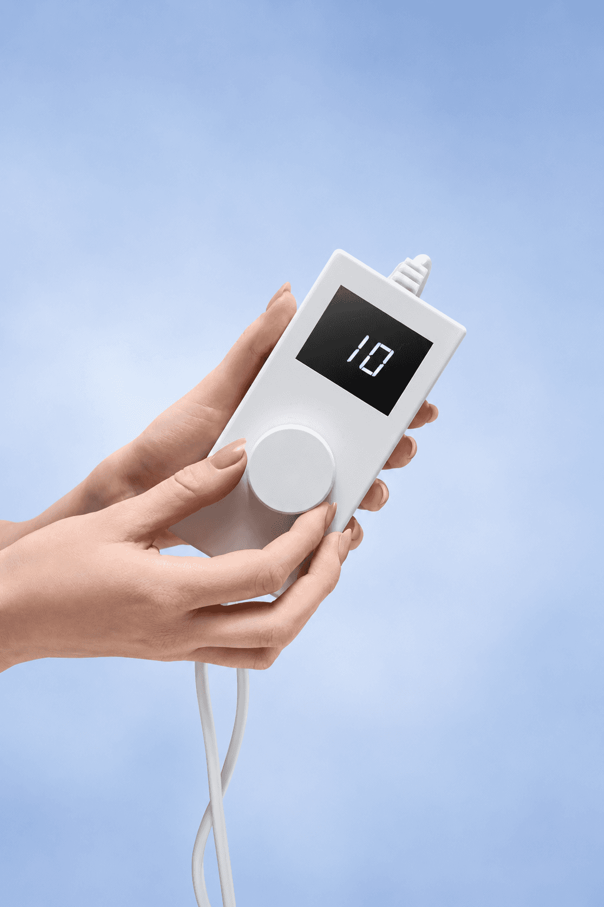
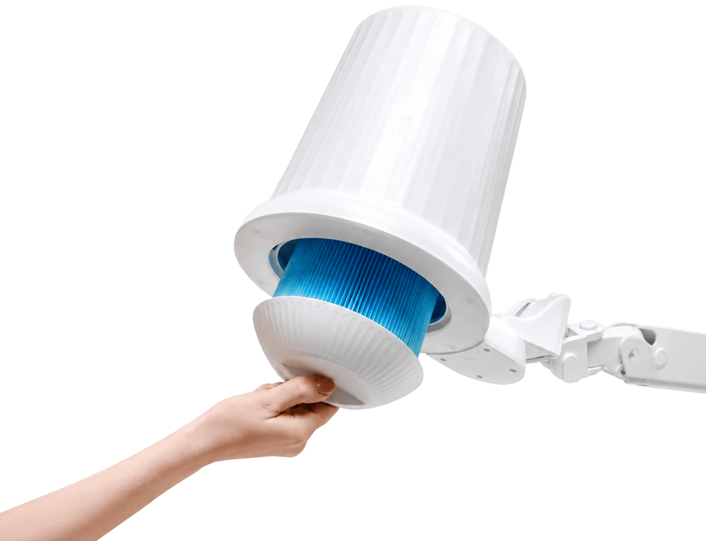
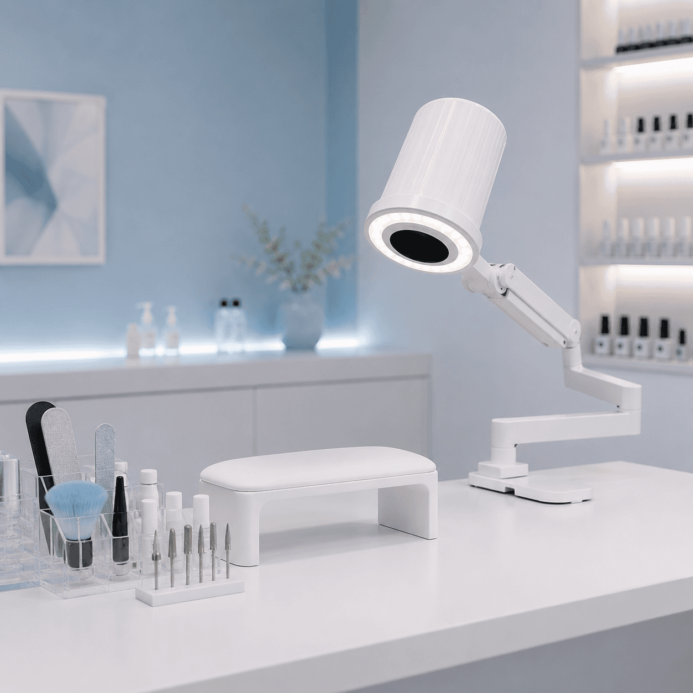
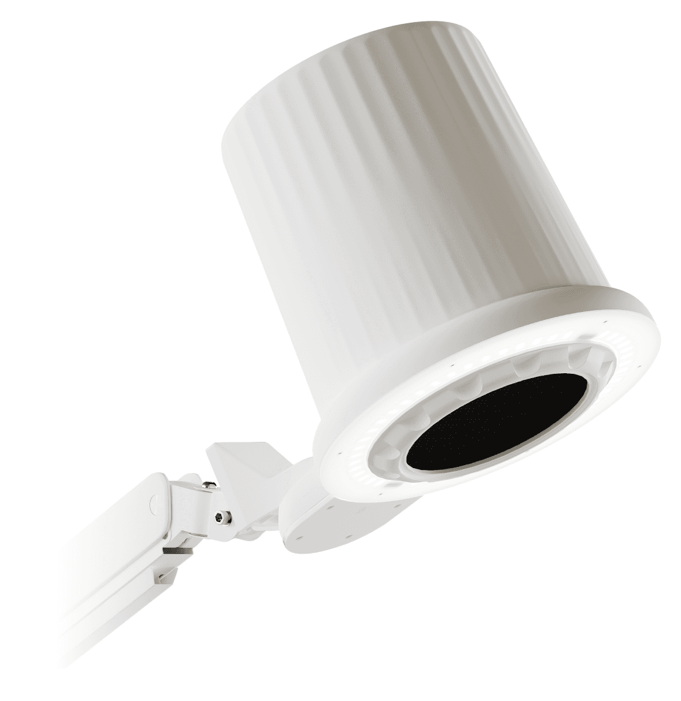

Ожидаем фото
Рабочее место частного мастера
Частный мастер
- Больше свободного пространства на рабочем столе
- Настройка положения вытяжки под посадку и рабочую зону
- Вытяжка и встроенное освещение в одной системе
MarkWell MW One
02 Устройство
Основные элементы вытяжки объединены в головной части. Фильтр расположен у рабочей зоны и легко снимается для обслуживания. Он задерживает пыль до того, как воздушный поток достигает двигателя, исключая загрязнение его лопастей и помогая сохранять рабочий ресурс двигателя.
03 MW One в реальной работе
Как MW One выглядит в ежедневной работе? Ниже — видео мастеров, которые уже используют вытяжку на своих рабочих местах.
04 Мощность
Двигатель развивает до 4700 оборотов в минуту и работает вместе с 10-уровневой системой регулировки мощности.
05 10 уровней мощности
Поворотом шайбы можно выбрать нужный режим мощности, а установленный уровень отображается на цифровом дисплее.

06 Магнитная фиксация фильтра
Фильтр фиксируется магнитами внутри головной части. Его легко снять и установить обратно без разборки корпуса.

07 Встроенный свет
Освещение встроено непосредственно в головную часть. Доступны три цветовые температуры — 3000, 4500 и 6000 К — и регулировка яркости. Мощность освещения — 38 Вт.
08 Кронштейн
Вытяжка устанавливается на край столешницы или тумбы при помощи струбцины и регулируемого кронштейна. Головную часть можно позиционировать над рабочей зоной, оставляя поверхность стола свободнее для инструментов и работы мастера.
09 Кому подходит

10 Линейка MarkWell

Основная вытяжка с регулируемым кронштейном и встроенным светом.
ХарактеристикиРасходный элемент для регулярного обслуживания.
ХарактеристикиМобильное основание для совместимого оборудования MarkWell.
Характеристики